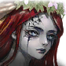

Votre toute première équipe devra être polyvalente afin de vous permettre d'effectuer un maximum de contenus avec un minimum de ressources.
un attaquant ATK-Based avec une attaque de zone de type feu, eau ou forêt
un tank du même élément que l'attaquant
un soigneur de type feu, eau ou forêt
un support de type feu, eau ou forêt
Les attaquants ATK-based sont les plus polyvalents. Montez les autres types d'attaquant pour les contenus spécifiques où ils sont utiles en parallèle, mais pas pour votre compo de base (et donc pas en priorité).
Le choix d'un serviteur avec une attaque de zone vient du fait qu'ils sont bien meilleurs en JcJ, et que pour le JcE vous serez sûrement limité par le système de rage avant de l'être par les dégâts de votre attaquant.
Les monstres lumière ou ténèbres sont beaucoup plus long à monter que les autres types et freineront lourdement votre progression.
Si votre attaquant et votre tank sont d'éléments différents, votre attaquant risque de prendre l'aggro à la place de votre tank. C'est jouable mais c'est clairement un désavantage à éviter si vous partez de zéro.
Cette compo tartiflette devrait pouvoir passer tous les étages des deux donjons. Vous aurez besoin de 350 vitesse sur les 2 soigneurs.
Heylel Ténèbres sera votre attaquant. Donnez-lui un maximum d'attaque et de dégâts critiques, et bien sûr un taux critique à 100%.
Pour vos soigneurs, le meilleur duo semble être Eimyria Feu et Teresia Feu. Eimyria pose un debuff de défense, donc assurez-vous qu'elle ai un maximum de précision (idéalement 250%). Teresia pourra bloquer les buffs adverses, notamment l'immunité, et poser la Rédemption qui pourra potentiellement rattrapper une AoE subie pile au mauvais moment.
Lenore Ténèbres, quand à elle, gardera toujours l'aggro, puisqu'elle est du même type qu'Heylel. Son aptitude de combo pose l'escorte, qui permettra à Heylel de survivre aux attaques de zone des deux boss. Il lui faudra 350 de vitesse, des sets chaînes pourront s'avérer utiles, mais utilisez ce que vous avez tant que ça n'ajoute pas de PV. Le set vent ne sera pas très utile sur elle puisque nous n'utiliseront pas ses aptitudes 1 et 2, uniquement sa combo.
Si vous ne jouez pas Heylel Ténèbres, vous pouvez également utiliser Heide Feu en tant que tank qui a un passif similaire à Lenore Ténèbres, mais sans l'escorte, afin de varier les éléments de vos attaquants en fonction de l'élément du boss pour garder l'aggro. Vous pourrez alors utiliser Bastion (Eau, Feu, Forêt, selon ce que vous avez et l'élément du boss), un poseur de dégâts continus comme Sphinx Eau...